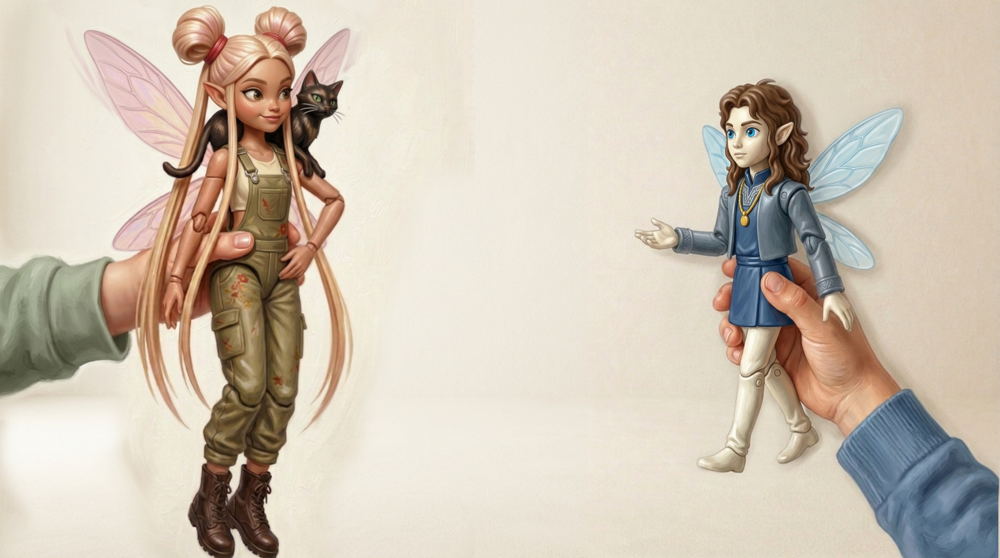

Oui, ça va.
Merci !
— Oui, ça va. Merci !
Passe o cursor para ver a tradução — ou toque no celular.
Ça va.
Tudo bem. / Estou bem.
Merci !
Obrigado! / Obrigada!
Oui é o «sim» do francês — curto, direto, válido em qualquer situação. Seu oposto, non («não»), funciona da mesma forma. A pronúncia de oui pode surpreender: soa como «wi» em português — não «o-u-i», mas uma sílaba só, dita rápido.
Repare em Ça va. — são exatamente as mesmas palavras que Ça va ? da página anterior. O Zyeu-Bleu não aprendeu nada novo: só devolveu as mesmas palavras com outra entonação. Em francês, a pergunta e a resposta são idênticas. É como se em português alguém perguntasse «Tudo bem?» e você respondesse «Tudo bem» — sem mudar nada além do tom.
Sobre Merci — vem do latim mercedem, mesma raíz de mercê em português. Em francês antigo significava «graça» ou «favor recebido». Hoje é simplesmente «obrigado» — mas a história fica escondida na palavra.